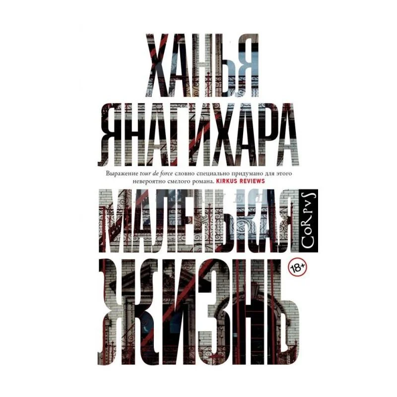

Ежемесячные подборки от участников клуба
Эпическая история о четырех друзьях в Нью-Йорке, их амбициях, успехах и жизненных испытаниях.

person Автор: Ханья Янагихара
star Рейтинг клуба: 4.8
menu_book Жанр: современная проза
groups Прочитали: 12 участников
Американская писательница Ханья Янагихара создала необычный роман, где и о страшном, и о радостном говорится без лишнего надрыва и сентиментальности. Четверо друзей - талантливый архитектор Малкольм, начинающий актер Виллем, уверенный в собственной неповторимости художник Джей-Би и гениальный юрист и математик Джуд - пытаются добиться успеха в Нью-Йорке, но оказывается, что ни карьера, ни деньги, ни слава не могут справиться с прошлым, если оно сильнее жизни…
203 голосов
187 голосов
156 голосов
Эпическая история о четырех друзьях в Нью-Йорке, их амбициях, успехах и жизненных испытаниях.
Рекомендовано: Анна
История семьи Буэндиа на протяжении семи поколений в вымышленном городе Макондо.
Рекомендовано: Дмитрий
Цикл рассказов о любви в разных её проявлениях: страстной, трагической и нежной.
Рекомендовано: Елена
Хотите порекомендовать книгу другим участникам? Отправьте свое предложение!